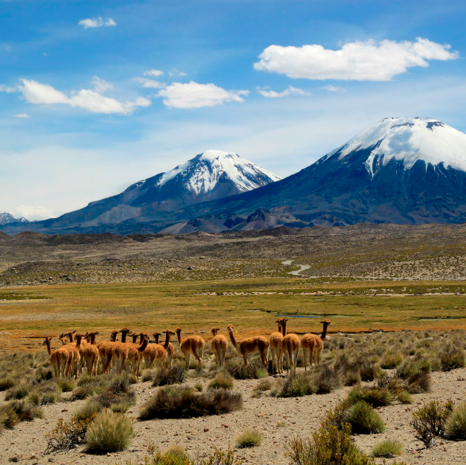
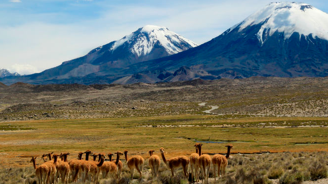
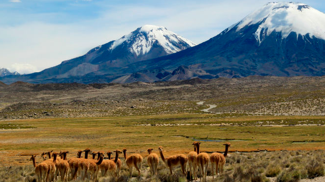
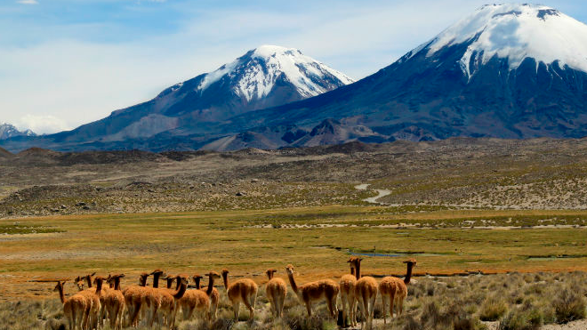

 


Áreas protegidas
“Son territorios protegidos legalmente que tienen la finalidad de asegurar la diversidad biológica, amparar la preservación de la naturaleza o conservar el patrimonio ambiental” (MMA, 2020)
Hoy muchas Áreas Silvestres se encuentran gravemente en peligro y todos podemos ayudar.